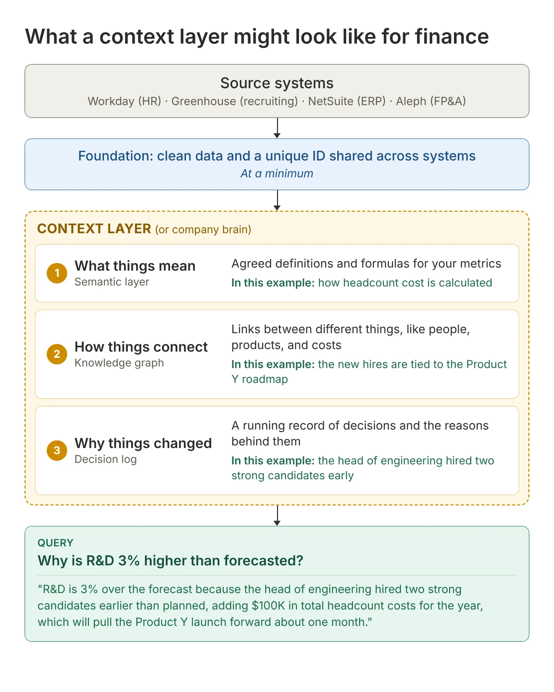
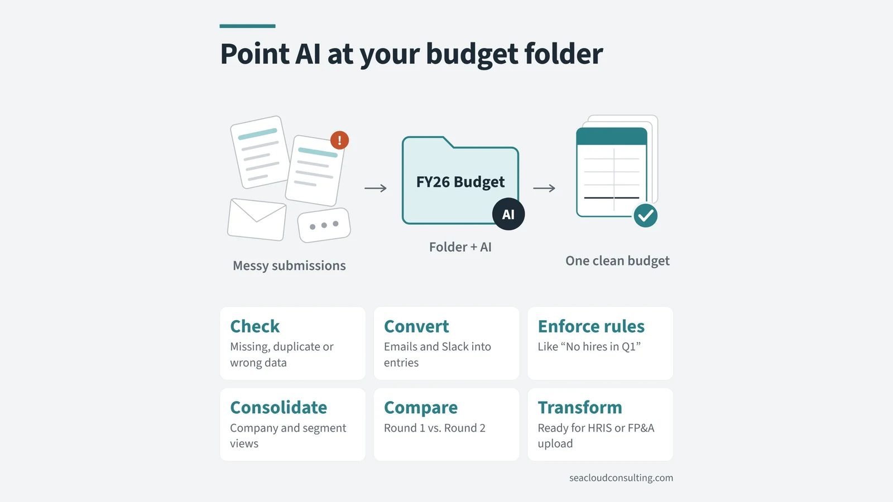
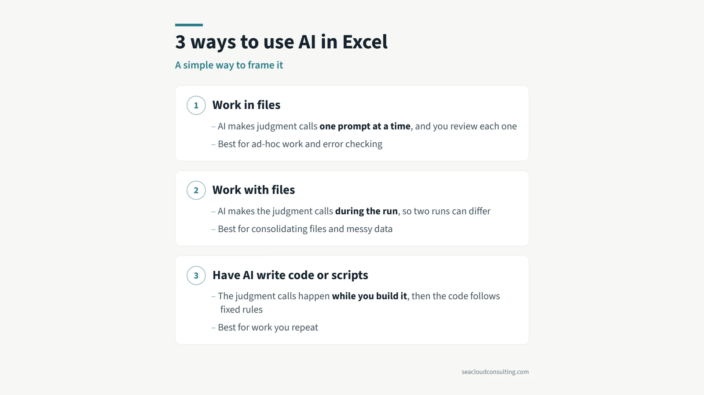

What a context layer might look like for finance

Knowledge graphs and context layers weren’t on my radar until recently. They’re showing up because AI needs more context to work inside companies. I built a simple finance example to see how this might play out.
Let’s say R&D is 3% higher than forecasted and you want to explain the variance.
Most FP&A teams will look for the items that are easiest to explain or spend a good amount of time tracking down all the details.
If your forecast is at the same level of detail as the actuals, AI might be able to spot the differences and write simple commentary today.
💡 However, imagine if you could get this answer automatically (and not just for R&D):
“R&D is 3% over the forecast because the head of engineering hired two strong candidates earlier than planned. That adds $100K in headcount costs for the year and should pull the Product Y launch forward about one month.”
To accomplish the above, each system needs clean records and a shared ID that links the same person, product or vendor across systems. But AI needs more than that:
- What things mean (semantic layer), like how headcount costs are calculated, which might include salary, benefits and other related costs
- How things connect (knowledge graph), like connecting the new hires to the product launch
- Why things changed (decision log), like the head of engineering hiring people early and why
Together, these are called the context layer or the company brain, or any number of names. Basically, it’s data that doesn’t neatly sit in a database today. And how these things get populated efficiently and checked for accuracy is an open question.
That said, I have spoken with a lot of finance people over the last few months, and my sense is that most companies are not ready to take this step yet. Instead, they are using AI for personal productivity or simplified workflows. 🤔
If I’m wrong, I would love to hear from finance people who have a context layer set up and humming.
More on AI and finance

Point AI at your budget folderWant to use more AI in your budget process this year? Connect a folder and let AI work with files.
3 ways to use AI in ExcelBudgeting season is coming up for a lot of companies. Here is a simple framework for the three main ways you can use AI with Excel.Don’t toss AI slop grenadesI heard this term on a podcast recently, and the meaning is clear if you have ever received half-baked AI output at work.